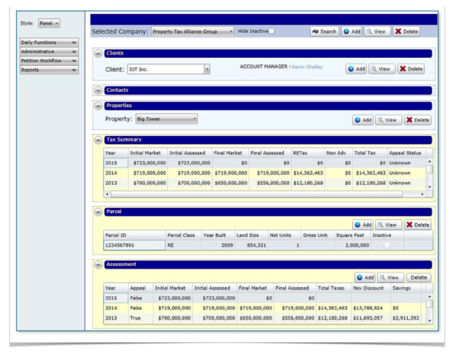
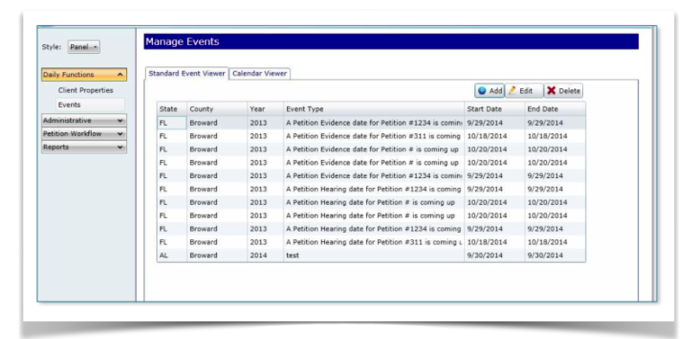
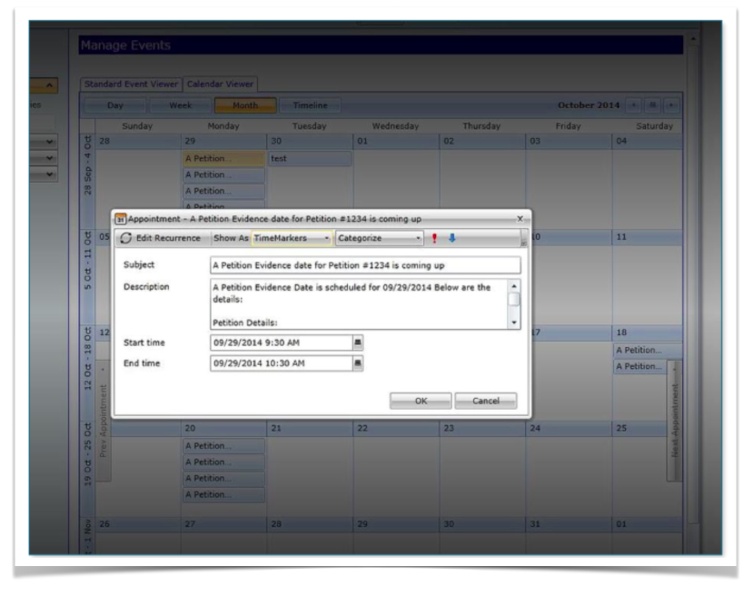
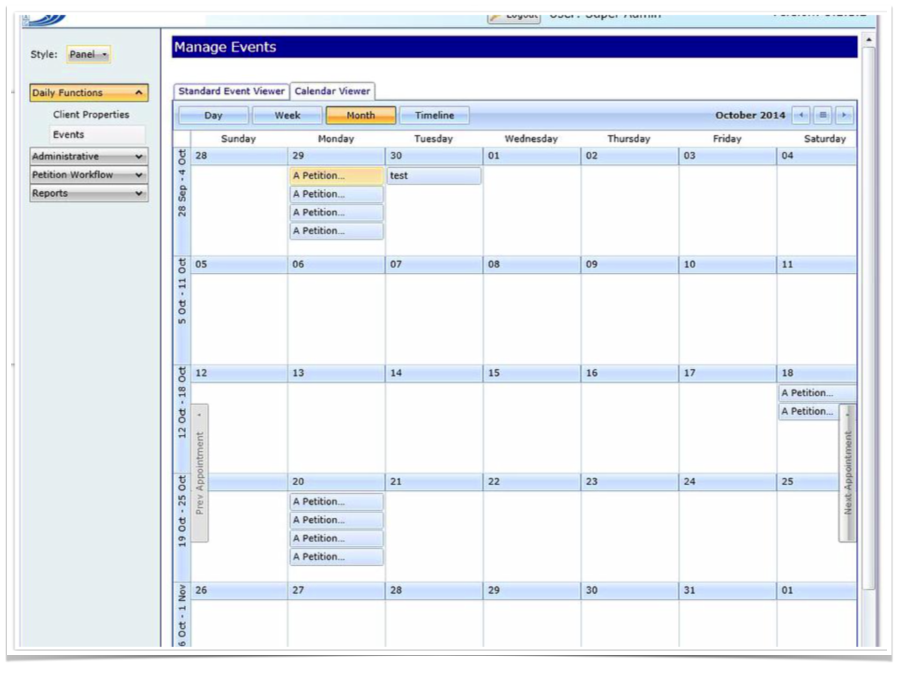
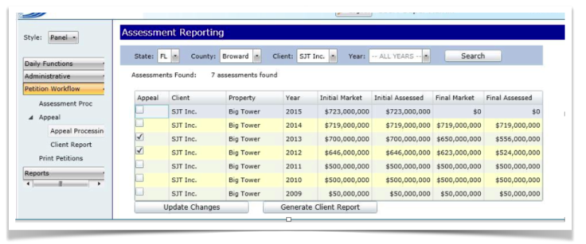

A commercial property-tax assessment & appeal platform that takes real-estate portfolios from raw assessments all the way to filed petitions — tracking every parcel, deadline and dollar of tax savings along the way.
Everything a property-tax consultant needs on one canvas — clients, contacts, properties, multi-year tax summaries, parcels and assessments — plus a scheduler for evidence/hearing deadlines and reporting that turns appeals into client-ready savings. Click any screen to enlarge.





A genuine line-of-business application — deep data model, workflow and reporting, all in Silverlight.
Companies, clients, contacts and properties in a clean hierarchy, with fast search and hide-inactive filtering.
Track parcels and multi-year assessments — initial vs. final market & assessed values, taxes and appeal status.
Assessment processing, appeal selection, print petitions and client reports — the heart of the platform.
A full calendar of evidence and hearing dates with day/week/month/timeline views and rich appointments.
Surface appeal savings down to the dollar and generate client-ready assessment reports on demand.
State- and county-aware throughout, so a single platform serves portfolios across jurisdictions.
I owned the architecture, engineering and UI/UX — building a responsive, data-dense experience on the technologies best suited to enterprise line-of-business work.